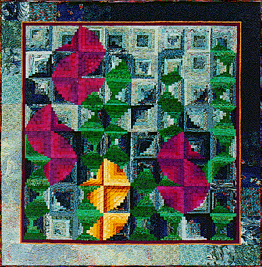

A Seahorse of a Different ColorA Seahorse of a Different Color
A Seahorse of a Different ColorA Seahorse of a Different Color
| #P106..........$7.95 80" X 80" I was designing this quilt while we watched "The Wizard of Oz" and was having trouble deciding whether the seahorses should be pink or yellow. Pretty soon Dorothy and company were in the Emerald City and there was the Horse of a Different Color. I started to laugh because I was in the middle of switching the color of the seahorses on my computer screen and had one yellow seahorse left. It was perfect, he was the SEAhorse of a different color. Of couse, I had to explain this to my boys. The movie had answered my question and named my quilt! Isn't synchronicity fun and amazing! Enjoy the watery whimsical world of seahorses frolicking amidst the swaying seaweed when you make this quilt from off center log cabin blocks. |

|